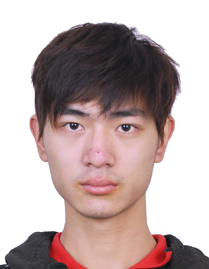

|
Cong Fang
Postdoctoral Researcher
University of Pennsylvania
Email: fangcong at pku dot edu dot cn
|

|
Overview
I am now a postdoctoral researcher at University of Pennsylvania, hosted by Prof. Weijie Su and Qi Long. Previously, I was a postdoctoral researcher at Princeton University, hosted by Prof. Jason D. Lee. Before that,
I received my Ph.D. at Peking Univerity in 2019, advised by Prof. Zhouchen Lin. I also work closely with Prof. Tong Zhang at HKUST.
My research interests are broadly in the machine learning algorithms and theory. I currently work on various aspects of optimization and the foundation of deep learning. The topics include, but are not limited to,
-
Optimization: non-convex opt., stochastic opt., distributed/federated opt., min-max opt., etc. I focus on designing faster algorithms and provide more realistic upper/lower complexity bounds.
-
Deep Learning Theory: complexity analysis, feature/representation learning analysis, etc. I am interested in proposing new models or analyses to have a better theoretical understanding of neural networks.
-
Applications : adversarial attacks/defense, auto-ml, model compression, etc.
I am recruiting self-motivated Ph.D. and interns who have strong mathematical abilities or coding skills to work with me (you do not need to come from mathematics department). If you are interested, please send your detailed CV to my email. You can be also co-advised by Prof. Zhouchen Lin and may have the opportunity to work with my other advisors, in particular Prof. Tong Zhang and Weijie Su.
[Selected Papers] [Books] [Selected Talks]
-
Layer-Peeled Model: Toward Understanding Well-Trained Deep Neural Networks [arXiv]
Cong Fang, Hangfeng He, Qi Long, and Weijie Su (α-β order),
Proceedings of the National Academy of Sciences (top journal: PNAS), 2021, revision.
Propose a simple model to explain and predict some behaviors of neural networks.
-
Modeling from Features: a Mean-field Framework for Over-parameterized Deep Neural Network [arXiv]
Cong Fang, Pengkun Yang, Jason D. Lee, and Tong Zhang (α-β order), 2020.
Provide a proof to show that Gradient Descent finds a global minimum for deepnets in the mean-field regime.
-
Sharp Analysis for Nonconvex SGD Escaping from Saddle Points [paper][arXiv]
Cong Fang, Zhouchen Lin, and Tong Zhang (α-β order),
Annual Conference on Learning Theory (COLT), 2019.
Propose a new kind of analysis to study non-convex objectives that have continuous Hessian matrices.
-
SPIDER: Near-Optimal Non-Convex Optimization via Stochastic Path-Integrated Differential Estimator
[paper][arXiv]
Cong Fang, Chris Junchi Li, Zhouchen Lin, and Tong Zhang (α-β order),
Advances in Neural Information Processing Systems (NeurIPS), 2018.
Design a new technique that achieves the first fastest rate to find a stationary point in stochastic non-convex optimization.
-
Mathematical Models of Overparameterized Neural Networks
[arXiv]
Cong Fang, Hanze Dong, and Tong Zhang,
Proceedings of the IEEE (the flagship journal of IEEE: PIEEE), 2021.
-
Accelerated First-Order Optimization Algorithms for Machine Learning
[paper]
Huan Li*, Cong Fang*, and Zhouchen Lin (*equal contribution),
Proceedings of the IEEE (the flagship journal of IEEE: PIEEE), 2020.
-
Accelerated Optimization in Machine Learning: First-Order Algorithms [book]
Zhouchen Lin, Huan Li, and Cong Fang, Springer, 2020.
I am in charge of introducing stochastic and distributed algorithms (Chapters 5 and 6)
- Layer-Peeled Model: Toward Understanding Well-Trained Deep Neural Networks
University of Pennsylvania, 2021.
- Stochastic Nonconvex Optimization, SPIDER
Guest lecture for EE539 at Princeton University, invited by Chi Jin, 2021.
- Convex formulation of Overparameterized Deep Neural Networks
Theory of Deep Learning Conference at Duke, invited by Rong Ge, 2020.